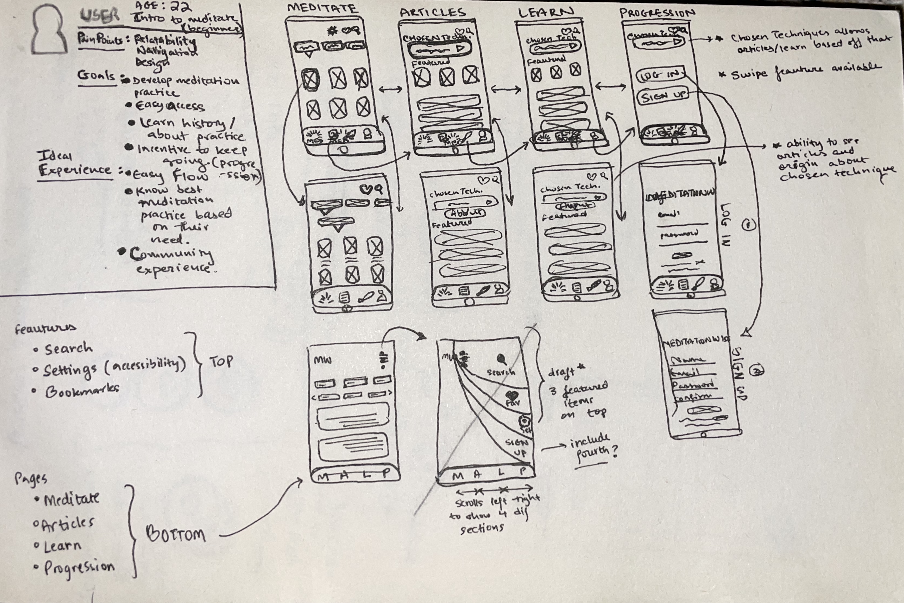
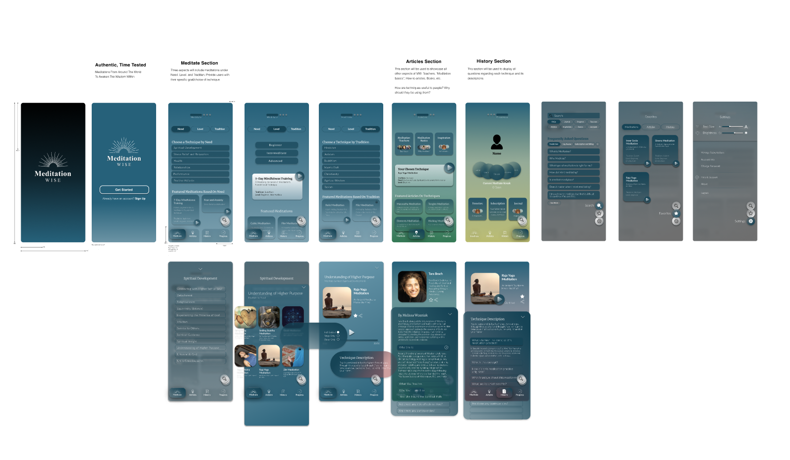
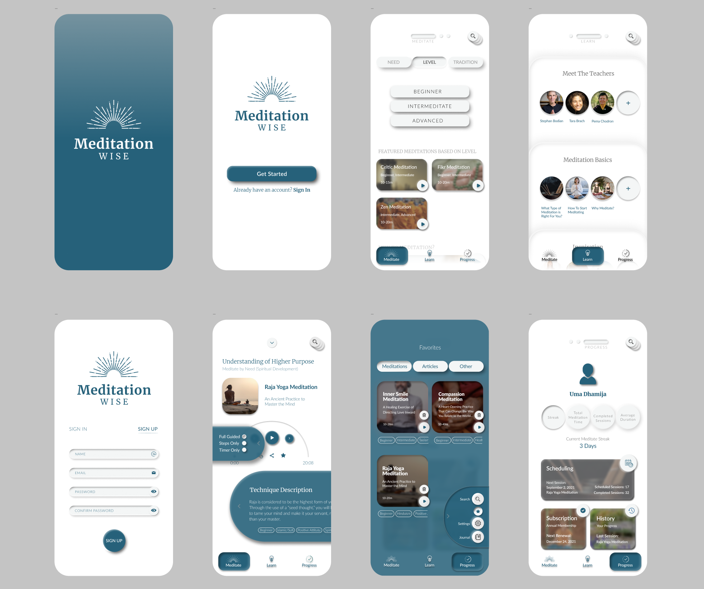

Overview
As the Lead Designer, I was given the task to conceptualize and design the mobile design for MeditationWise. I applied the double-diamond design methodology - involving user research methods to ultimately construct an interactive UI for a mobile experience.
Analysing the old website of MeditationWise, I found that it lacked a cohesive user experience and visual appeal. My goal was to create a mobile app that not only provided guided meditation sessions but also improved user engagement through a more intuitive and visually appealing interface.

The Challenge
- There are numerous meditation apps available - what differentiates MeditationWise?
- If our goal is to encourage people to meditate more and use their phones less, how does a mobile app fit into that vision?
- As the only designer, what system could I create that is scalable and adaptable for future growth?
- With so many UI patterns in the wellness space, how do I create a unique and memorable experience?
Current meditation tools provide generic content and only focus on only type of meditation - Mindfulness. And while mindfulness is a great technique, it overlooks users’ cultural and spiritual preferences. MeditationWise bridges this gap by connecting users with authentic practices from diverse traditions, led by genuine experts. For the interface, I aimed to create a calming and intuitive experience that encourages regular practice without overwhelming the user - using soft colors, simple navigation, and personalized content.

Process
Using the double-diamond design methodology, I worked through the phases of Discover, Define, Develop, and Deliver to create a user-centric mobile app.
- User research and discovery:
Initial user interviews and surveys to understand product sentiment and usability analysis - Ideation and concept development:
User personas and journey mapping, wireframing and low-fidelity prototype on Figma - Prototyping and testing:
Usability test and interviews with the same users for feedback and iteration - Design iteration based on feedback:
High fidelity prototyping and visual design refinement, design system implementation - Implementation and handoff:
Handoff to development team with design system and documentation

Solution
My research revealed that Meditation Wise aims to provide its users with authentic, time-tested techniques from all traditions around the world with descriptions of the technique's history and benefits. Its mission is to provide all the necessary tools in order to allow its users to develop a meditation practice using their chosen technique, not just explore many options.
Both attitudinal and behavioral research methods—including user interviews, contextual inquiries, surveys, and usability testing with 9+ participants via Loop11—revealed that poor navigation and lack of relatability were the primary pain points of the existing website.
In response, the design prioritizes an immediately accessible search feature, reduced choice complexity (guided by Hick’s Law), and clear surfacing of key meditation techniques by need, level, and tradition, alongside features like favorites, scheduling, journaling, and progress tracking to support consistency and habit formation.
Content models and end-to-end user flows were developed in Miro, followed by paper sketches, wireframes, and multiple iterations leading to a low-fidelity, interactive prototype built in Adobe and Figma; while the design is ready to showcase, further usability and accessibility testing is planned.

Impact & Outcomes
The redesign clarified key usability issues and demonstrated how a more structured, habit-focused experience could better support users in developing a consistent meditation practice.
- Identified core usability failures in navigation and content discoverability through usability testing with 9+ participants
- Users responded positively to simplified navigation, clear categorization by need, level, and tradition, and the addition of habit-supporting features such as scheduling and favorites
- Established a clear product direction for Meditation Wise, aligning user needs with long-term engagement goals rather than one-off meditation sessions
- Learned the importance of reducing cognitive load in spiritually oriented products and designing consistency across navigation and content to support habit formation
Link to Figma Prototype